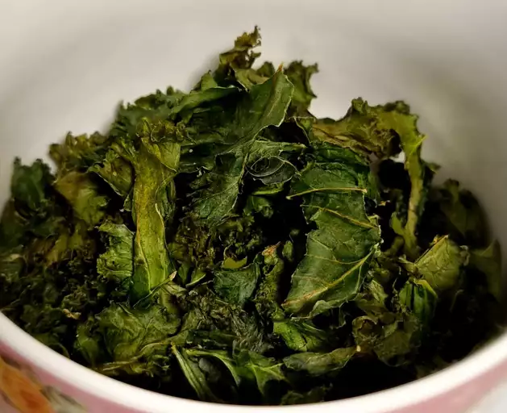

Baked Kale

Crispy oven-baked homemade snacks. Just like potato chips, kale chips are great solo or with friends!
Prep time: 10 minutes. Cook time: 20 minutes. Servings: 6
- 1 bunch kale
- 1 tablespoon olive oil
- 1 teaspoon flaked sea salt
- Preheat oven to 300 degrees F (150 Degrees C). Line rimmed baking sheet with parchment paper.
- With a knife or kitchen shears carefully remove kale leaves from the thick stems and tear into bite size pieces. Wash and thoroughly dry kale with a salad spinner. Drizzle kale leaves with olive oil and toss to combine. Spread out in an even layer on the baking sheet without overlapping and sprinkle with salt.
- Bake until the edges start to brown but are not burnt, 20 to 30 minutes.